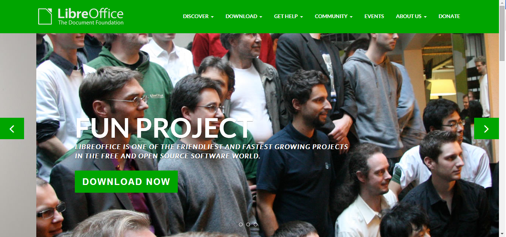

On that page, click the "Download Now" button shown in figure 1.
From the next page, select the download button under the "Main Installer Header." (See Figure 2)
Your download should start immediately. Once the download finishes, open the installer from the download page of your browser
and click "run." (See Figure 3)
Follow the installation wizard's prompts.
After the installation is finished, LibreOffice can be accessed like any other program from the start menu, or the desktop shortcut if you chose
to have one made when prompted by the installation wizard.
Figures

Figure 1: The LibreOffice website, with download button circledFigure 2: The LibreOffice installation page, with proper button circled Figure 3: The Google Chrome download page, with installer circled in red, and the resulting prompt, with run button circled in blue.